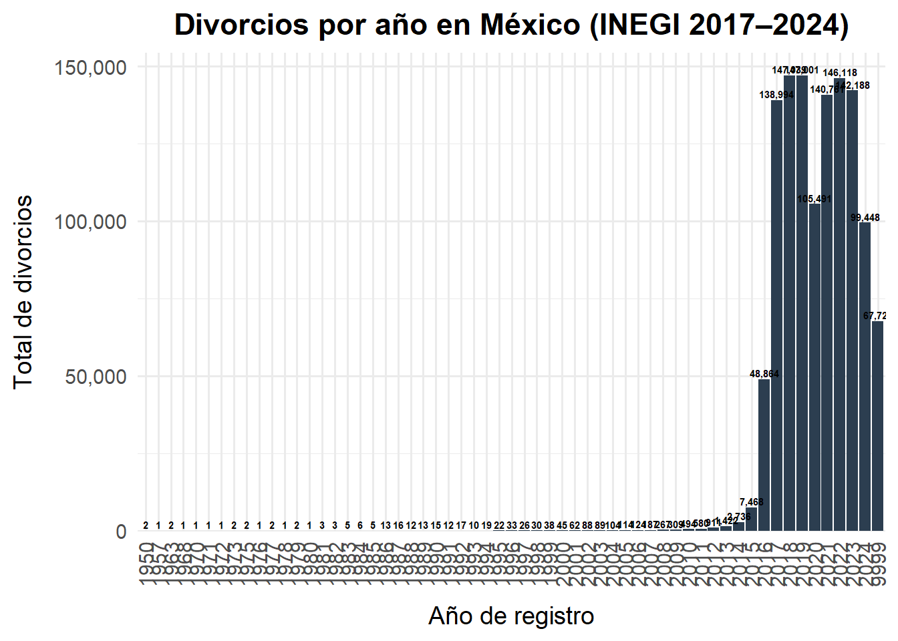
4 Capítulo 4. Tendencias nacionales del divorcio
5 4.1 Cobertura y alcance de las series
Este capítulo presenta las tendencias temporales y espaciales del divorcio en México, con énfasis en:
- Evolución nacional (2017–2024).
- Heterogeneidad entre entidades federativas.
- Indicadores clave: número de divorcios, tasa por 100 matrimonios, tasa por 100 mil habitantes (opcional si integras población), y distribución de custodia y pensión alimenticia.
Fuentes: INEGI (series de divorcios y matrimonios), series poblacionales (CONAPO/INEGI).
Nota: Sustituye las rutas dedata/por tus archivos. Los enlaces a INEGI se listarán en Apéndices.
6 4.2 Datos nacionales
6.1 4.2.1 Datos nacionales anuales
En la base de datos del INEGI de registros de divorcios del 2017 al 2024 se encuentra un total de 1,198,943 registros.
En la tabla existen registros desde 1950 y un total de 67721 registros con año 9999 (No Espeficado), por lo que los eliminaremos de la tabla para conservar los registros de 2017 a 2024, quedando un total de 1067040 registros.
Ahora repetiremos la graficacion de los registros filtrados:
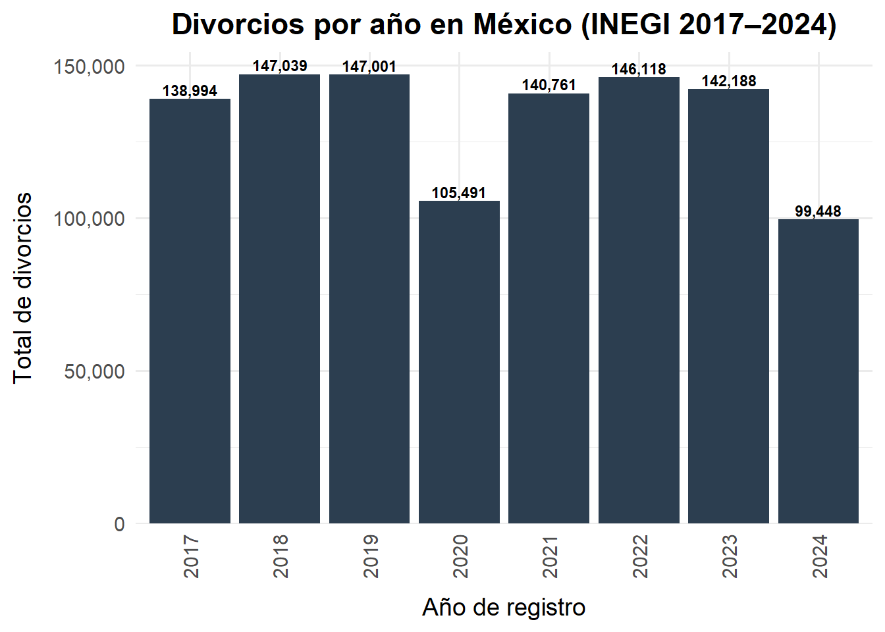
| Data Parental — Número de divorcios por año (INEGI 2017–2024) | ||
| Año | Total de divorcios | % del total |
|---|---|---|
| 2017 | 138,994 | 13.0% |
| 2018 | 147,039 | 13.8% |
| 2019 | 147,001 | 13.8% |
| 2020 | 105,491 | 9.9% |
| 2021 | 140,761 | 13.2% |
| 2022 | 146,118 | 13.7% |
| 2023 | 142,188 | 13.3% |
| 2024 | 99,448 | 9.3% |
| Total general: 1,067,040 Media anual: 133,380 |
||
6.2 4.2.2 Datos nacionales mensuales y diarios
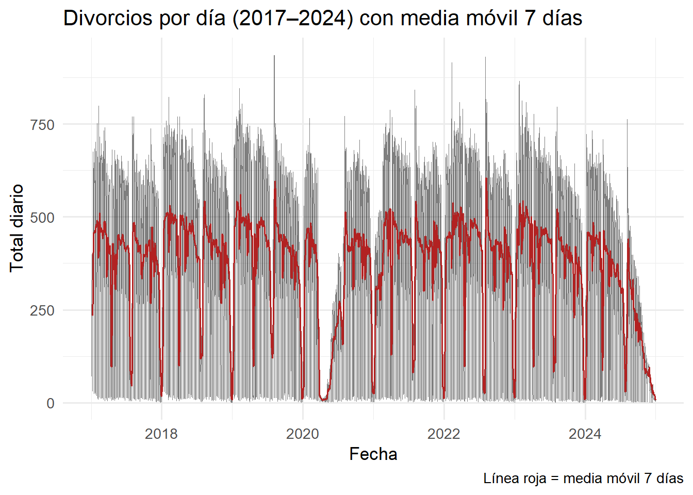
Para que sea más fácil detectar cómo va cambiando con el tiempo, se agregó una línea suavizada que promedia los últimos 7 días; esta línea nos permite ver la tendencia real sin distraernos con saltos aislados propios del registro día a día.
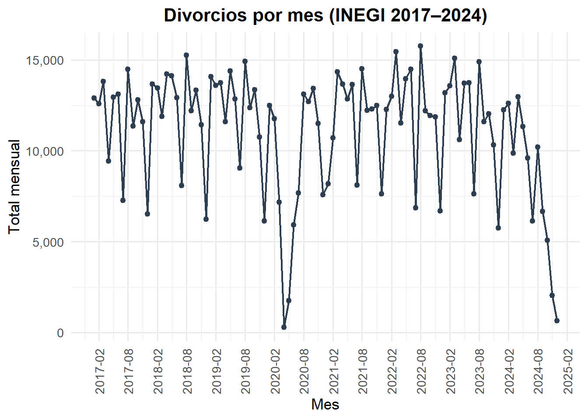
Cuando agrupamos la misma información por mes, la gráfica se vuelve más clara y ayuda a ver si existen momentos del año donde se concentran más divorcios, así como si el total mensual ha aumentado o disminuido con el paso de los años.
Al observar la gráfica destacan varios patrones:
1) Un desplome abrupto en 2020
Se aprecia una caída extrema del número de divorcios entre abril y junio de 2020, llegando prácticamente a cero. Este comportamiento coincide con el cierre temporal de juzgados y oficinas públicas durante las primeras etapas de la pandemia por COVID-19, cuando muchos trámites civiles quedaron suspendidos.2) Recuperación posterior pero con variación
Tras la reapertura gradual en 2021, los divorcios vuelven a aparecer, primero con valores moderados y luego retomando niveles comparables a los años previos, aunque con oscilaciones mes a mes.3) Caídas cíclicas dentro de cada año
Prácticamente en todos los años se observan caídas marcadas en ciertos meses. Es probable que estas correspondan a periodos de baja actividad administrativa —por ejemplo, vacaciones, fin de año o recesos judiciales— más que a un cambio real en la conflictiva familiar.4) Tendencia reciente a la baja en 2024
En los últimos meses visibles de la serie se nota un descenso sostenido, lo que podría deberse a retrasos en el registro, cambios institucionales o simplemente a que los datos más recientes aún no están completamente cerrados.La serie mensual no solo muestra cuántos divorcios ocurren, sino que revela cómo el fenómeno responde a factores externos —como la pandemia— y a ritmos institucionales del sistema judicial mexicano. Estas variaciones no reflejan solo dinámicas familiares, sino también el calendario y capacidad de las instituciones que registran y formalizan el divorcio.
6.3 4.2.3 Proyeccion a futuro
Además de describir el pasado, pronosticar permite anticipar carga de trabajo y planear recursos (juzgados, mediación, defensorías). Un buen pronóstico no “adivina”: extrapola patrones reales del historial (tendencia de largo plazo, estacionalidad del calendario y choques externos) para construir escenarios informados sobre los próximos meses.
En 2020, el cierre sanitario provocó un choque excepcional en los trámites. Por eso es clave distinguir entre lo que es dinámica propia del divorcio y lo que es efecto administrativo transitorio.
Se agregaron los registros por mes (2017–2024).
Se ajustaron dos modelos Prophet:
- **Modelo A (sin dummy COVID):** usa la serie tal cual; el colapso de 2020 se interpreta como **cambio en la tendencia**.
- **Modelo B (con dummy COVID 2020-03 a 2020-12):** introduce un **regresor externo** que “marca” los meses del cierre; así el impacto se modela como **efecto aditivo** y **no** como quiebre estructural. Para el futuro, la dummy se fija en 0 (suponemos que no se repite el cierre).
### 1) Predicción **con COVID como cambio de tendencia** (Modelo A)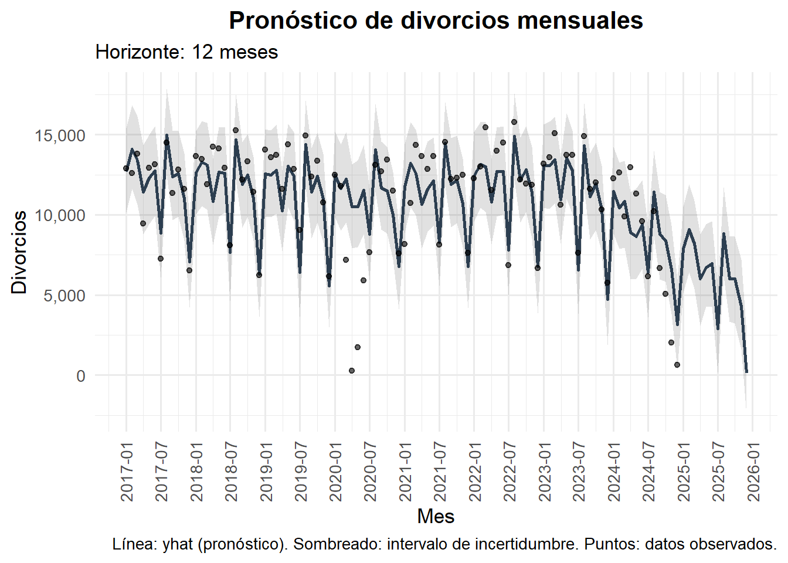
En la primera proyección (línea de pronóstico base), el bache de 2020 aparece absorbido por la tendencia: el modelo “aprende” que la serie puede caer bruscamente y, por tanto, arrastra niveles más bajos hacia el futuro. Las bandas de incertidumbre reflejan la variabilidad histórica, pero la trayectoria central queda condicionada por ese suceso extremo.
Interpretativamente, este escenario sirve para cuantificar el impacto total si uno no separa el choque sanitario del comportamiento subyacente.
6.3.1 2) Estacionalidad con COVID incorporado
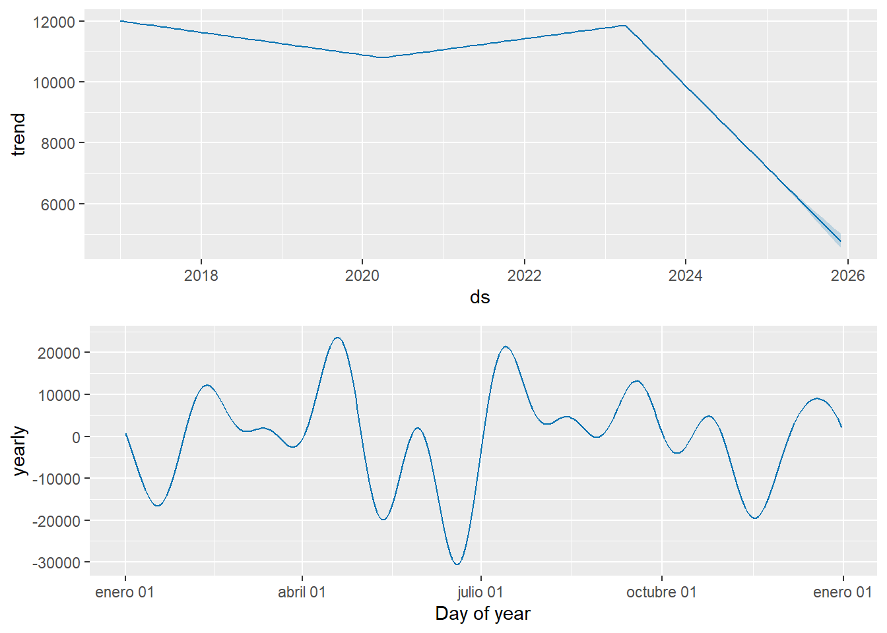
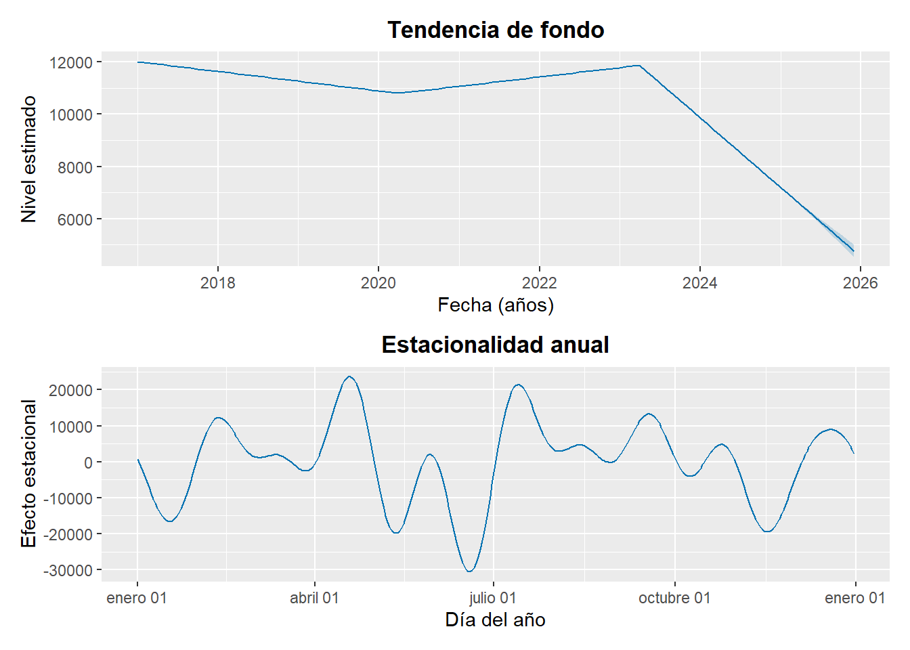
El componente estacional anual del Modelo A muestra los picos y valles regulares del calendario: meses tradicionales de alta actividad (p. ej., alrededor de mitad de año y algunos periodos post-vacacionales) y meses bajos (vacaciones, fin de año, recesos judiciales).
Como el choque de 2020 no es estacional sino exógeno, la estacionalidad conserva su forma, pero la línea de base queda deprimida por el bache.
6.3.2 3) Predicción sin el efecto COVID (Modelo B)
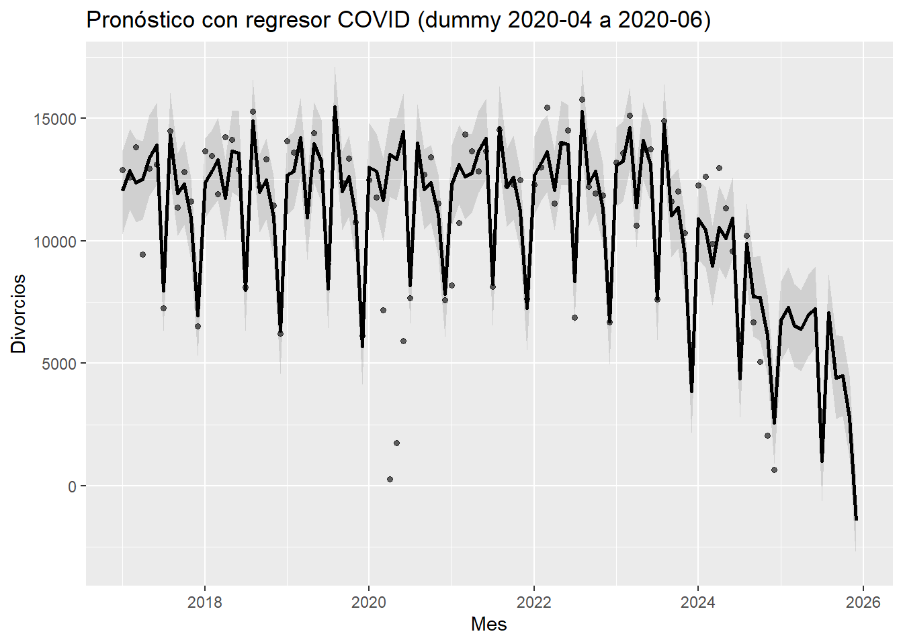
Para evitar ese arrastre, incorporamos una dummy COVID en 2020-03…2020-12. Con ello, el colapso se explica como regresor y no como cambio permanente en la estructura de la serie.
Al pronosticar con la dummy desactivada en el futuro, la proyección resultante recupera un nivel más coherente con los años previos al cierre, manteniendo la variación propia del fenómeno. Este escenario es útil para responder: ¿cómo se vería la trayectoria si el cierre sanitario no hubiera existido?
6.3.3 4) Estacionalidad sin COVID
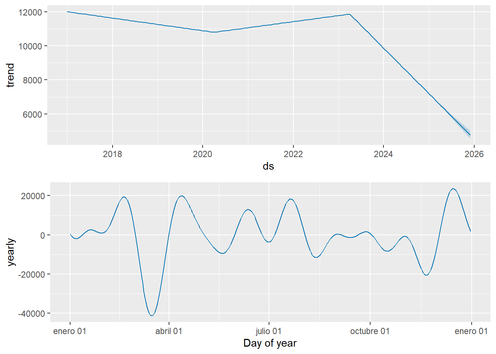
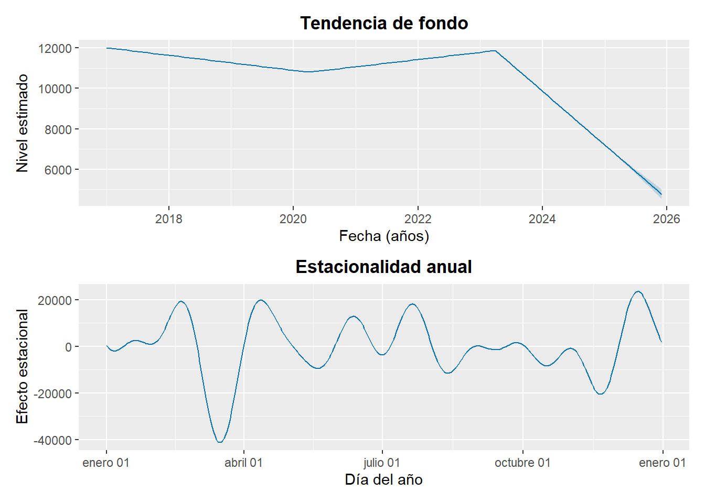
En los componentes del Modelo B (con dummy) la estacionalidad anual conserva la misma fase (meses altos/bajos), pero ahora se observa sobre una línea de base más estable. Es decir, el calendario administrativo sigue ordenando los picos y valles, pero el nivel general no queda contaminado por el cierre extraordinario de 2020.
6.3.4 5) Comparativa de modelos (A vs B)
La figura comparativa muestra dos lecturas complementarias:
La línea discontinua (Modelo A, sin ajuste) proyecta una trayectoria más baja, porque incorpora el bache de 2020 como cambio de tendencia.
La línea sólida (Modelo B, con dummy) ofrece un escenario más realista para planeación operativa: separa el choque sanitario y proyecta el comportamiento subyacente que ya se observaba antes del cierre.
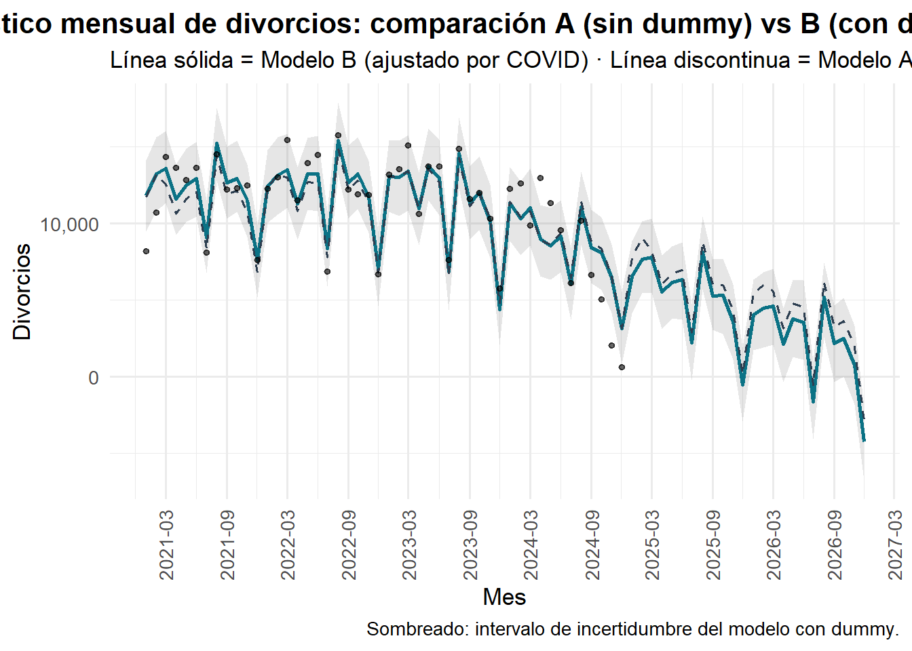
| Pronóstico 24 meses — comparación de modelos | ||||||
| Meses | Promedio mensual (A) | Promedio mensual (B) | Total 24m (A) | Total 24m (B) | Δ% promedio (B vs A) | Δ% total (B vs A) |
|---|---|---|---|---|---|---|
| 24 | 4,757 | 3,814 | 114,176 | 91,541 | −19.8 | −19.8 |
Conclusion El pronóstico mensual sin ajuste (Modelo A) proyecta en promedio 4,757 divorcios por mes para los próximos 24 meses.
Al incorporar el dummy COVID (Modelo B) —que aísla el shock administrativo de 2020— el promedio esperado asciende a 3,814, lo que equivale a una variación de -19.8% respecto del modelo sin ajuste.
En términos sustantivos, el Modelo B evita que el colapso de 2020 “arrastre” artificialmente la tendencia de largo plazo.
La estacionalidad anual se mantiene: meses históricamente altos continúan siendo los de mayor actividad, mientras que los valles coinciden con recesos administrativos.
Con esto, el escenario ajustado sugiere una trayectoria más coherente con los años previos al cierre, útil para planear capacidad operativa en juzgados y servicios de mediación.
6.4 4.2.4 Recomendaciones para planeación operativa
Usar el modelo ajustado (con dummy COVID) para estimar demanda futura
El escenario sin corrección sub-estima la carga esperada porque arrastra el cierre de 2020 como si fuera cambio estructural. Para planificación de salas, personal, peritos y turnos, el escenario ajustado es el que más se aproxima al régimen real post-COVID.Planear con horizonte mínimo anual y no mensual aislado
Debido a la estacionalidad judicial, los meses con valle no implican reducción permanente. Las dotaciones deben estimarse sobre el promedio anual proyectado, no sobre un mes puntual.Reconocer estacionalidad y calendarizar refuerzos
Los picos recurrentes detectados en la estacionalidad pueden usarse para:
- Programación de horarios extendidos
- Refuerzos temporales en periodos críticos
- Prevención de cuellos de botella en notificaciones, audiencias y sentenciasSeparar capacidad de “pico” y capacidad “sostenida”
El promedio mensual no captura la carga de los meses altos. Se recomienda dimensionar infraestructura para el percentil alto del calendario, no para el promedio.Re-entrenar el pronóstico cada 6–12 meses
Si la política pública (digitalización, mediación obligatoria, reforma legal) cambia el régimen, el modelo debe actualizarse para no basar decisiones en estructura vieja.
6.5 4.2.5 Advertencias metodológicas
El modelo no explica causas
La proyección describe patrones temporales; no identifica por qué aumentan o disminuyen los divorcios. No debe usarse para inferir causalidad.El rango de la dummy COVID es una decisión de modelado
Si el cierre real fue más largo o más corto que el marcado, el efecto puede estar sub- o sobre-estimado. El rango debe revisarse con evidencia de calendario judicial.Modo aditivo vs multiplicativo
Si los meses altos aumentan en proporción al nivel general, un modelo multiplicativo puede describir mejor la dinámica. Debe probarse y compararse.Sensibilidad al tramo de entrenamiento
Usar todo 2017–2024 vs usar sólo post-COVID (2021+) puede alterar la pendiente estimada. Es buena práctica reportar al menos dos ventanas de entrenamiento como control.Datos recientes incompletos distorsionan el final de la serie
Los últimos meses del año suelen estar sub-reportados al momento de descarga. Debe anotarse explícitamente cuando el último tramo es “cifra preliminar”.La incertidumbre es parte de la respuesta
Las bandas no son “error” del modelo, sino información: cuando la banda es ancha, la planeación debe incorporar margen de tolerancia, no sólo la línea central.